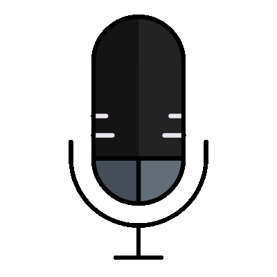

My name is Derek Vale, and I'm the creator and host of The Misogyny Podcast.
I created The Misogyny Podcast because somebody had to say out loud what millions of men have been thinking quietly for years. I’m not a politician, an academic, or one of the credentialed cowards paid to make simple truths sound complicated.
I’m just a man willing to examine sex, power, family, and the natural order without apologizing every time reality hurts someone’s feelings. You may find my conclusions offensive. That does not make them incorrect; it merely means you have been trained to reject them before considering whether they are true.
This show is for men who are tired of being lectured, women courageous enough to listen, and anyone willing to question the increasingly fragile mythology of equality.
I welcome praise, criticism, questions, and guest requests through the call-in forms — although submitting a response does not guarantee that I will treat it with the seriousness you believe it deserves.
I do ask that you please see the FAQ before leaving a nasty voice mail or challenging me on something I've said that upset you.
Apparently, some listeners require advance notice before encountering ideas that make them uncomfortable, so here it is: this program contains explicit misogyny, sexual language, dehumanization, reproductive coercion, forced pregnancy, sexual violence, homophobia, references to childbirth and death, and opinions about women delivered without the usual apologies, euphemisms, or permission slips. If any of that sounds “harmful” or “triggering” to you, exercise whatever remains of your personal agency and stop listening—though I suspect your outrage will keep you here.
| Type | Submission and Email Thread |
|---|---|
| Guest Pitch | DR. ALTERS — WEIRD SCIENCE SURGICAL COLLECTIVE |
| Hate Mail | HATE MAIL COLLECTION |
| Challenge | YOUR CLAIMS ABOUT THE ROLE OF RAPE — UNIVERSITY STUDENT |
| Question | NEED GUIDANCE AND GOD — SWOLLENWOMB |
| Question | DESPERATELY SEEKING MOTHERHOOD |
| Support | ARE YOU STILL SINGLE? — GUILTYPLEASURE |
| Support | WOMEN ARE THE PROBLEM — DONE WITH THESE BITCHES |
The Misogyny Podcast is a work of fiction, satire, parody, and dark humor. Derek Vale is a fictional character, and his statements, beliefs, advice, and alleged experiences do not represent the views of the author. The project depicts misogyny, sexual violence, homophobia, reproductive coercion, and other forms of prejudice in order to examine and ridicule the rhetoric used to excuse them—it does not endorse that rhetoric.
All episodes, listener submissions, interviews, testimonials, and interactions presented as part of the podcast are fictional unless explicitly identified otherwise. Any resemblance to actual people or events is coincidental. This project is intended for mature audiences and may contain disturbing or offensive material. Reader discretion is strongly advised.